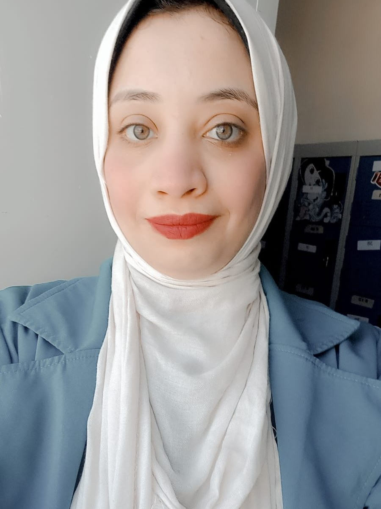

Designing learning experiences that move people to perform.
I'm Esraa Ebrahim — an Instructional Designer and L&D Specialist with 3+ years designing learner-centred experiences across corporate L&D and international youth development.
I start from a simple discipline: decide what someone should be able to do differently, then design the shortest honest path to get them there. My UX background keeps me anchored to the learner's experience — not the content map. Working with teams across 7+ countries has taught me to build for adaptation, not control.

-
01
Diagnose before designing. Most performance problems aren't training problems. A good needs analysis finds that out early — before anything gets built.
-
02
Observable objectives only. If you can't picture someone doing it differently, the goal isn't finished. Vague aims can't be taught, practised, or measured.
-
03
Discovery over delivery. People act on what they work out themselves. Every experience I design creates moments of realisation — not passive absorption.
-
04
Reflection is the mechanism. Without structured reflection, even great experiences evaporate. I build it in from the start, not as a closing ritual.
I stay close to SMEs and stakeholders throughout — not as a gatekeeper, but as a translator between what the business needs, what subject experts know, and what learners can actually absorb.
My UX background makes me ask one question about every learning experience: what is this like from the other side? That question has saved more projects than any framework I know.